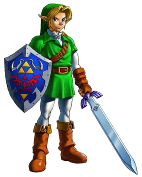

Tijdlijn

De legende van de godinnen en de held
De drie godinnen Din, Nayru en Farore hebben Hyrule gecreëerd. Voor ze hun creatie verlieten, lieten ze de wensvervullende Triforce achter. De godin Hylia waakte over deze Triforce, maar de demonenkoning Demise wilde maar al te graag dit artefact in zijn duivelse handen krijgen. Hylia nam de Triforce en de overlevende mensen mee naar eilanden in de lucht. Ze wist dat dit echter uitstel van executie zou zijn, dus ze trof voorbereidingen om Demise te kunnen stoppen.
Skyward Sword
Uiteindelijk leidt dit naar de eerste game in de Zelda-tijdlijn: Skyward Sword. Zelda, hier nog geen prinses, is de reïncarnatie van Hylia. Link, Zelda en de zwaardgeest Fi weten Demise te verslaan. Demise zweert dat zijn haat gereïncarneerd zal worden in iemand die hun afstammelingen zal blijven achtervolgen. Wie o wie zal dat worden? Fi sluimert in wat uiteindelijk de Master Sword wordt. De mensen keren terug naar de oppervlakte en het land Hyrule wordt gesticht. Er breekt echter oorlog uit over het heilige land rondom de Triforce. De verantwoordelijke tovenaars worden verbannen naar het twilight-rijk. Het heilige land en de Triforce worden verzegeld in een tempel, met de Master Sword als enige sleutel. De slechte minish-tovenaar Vaati poogt de vrede te verbreken in zowel The Minish Cap als Four Swords, maar een reïncarnatie van Link weet hem steeds te stoppen
Ocarina of time
Eens in de honderd jaar wordt er een man geboren binnen de Gerudo, een clan dieven met (normaal) alleen vrouwen. Deze man wordt automatisch de leider van de Gerudo. Deze leider, Ganondorf, verraadt de koning en weet de Triforce te bereiken. Het heilige land raakt corrupt the Dark World en de Triforce splitst zich in drie onderdelen. Hyrule wordt ondergedompeld in zeven jaar duisternis voordat Link en Zelda het opnemen tegen Ganondorf. Het is hier dat de Legend of Zelda-tijdlijn wordt opgesplitst in drie delen.
Link word verslagen
In deze tijdlijn wordt Link verslagen door de in een groot zwijn getransformeerde Ganondorf nu Ganon. Ganon krijgt de overige Triforce-onderdelen in zijn klauwen, maar wordt door Zelda en de zes Sages verzegeld in the Dark World. De games A Link to the Past, Links Awakening, Oracle of Ages/Oracle of Seasons, A Link Between Worlds, Tri Force Heroes, de oorspronkelijke Legend of Zelda en The Adventure of Link komen allen voort uit deze tijdlijn.
Kind tijdlijn
Gelukkig is er ook een tijdlijn waarbij het Link in Ocarina of Time wél lukt om Ganon te verslaan. Omdat hij eerst zeven jaar naar de toekomst reist, wordt Link na het verslaan van Ganon teruggestuurd naar zijn eigen tijd. Hier lukt het Link om Zelda en de koning te waarschuwen voor Ganondorf en zijn snode plannen. Link verlaat Hyrule met de enige sleutel naar het heilige land en Ganondorf wordt verbannen naar het twilight-rijk. Uit deze tijdlijn komen Majora’s Mask, Twilight Princess en Four Swords Adventures voort.
Volwassenen tijdlijn
Wanneer Ganondorf is verslagen door Link, wordt hij verzegeld in the Dark World. Link keert terug naar zijn eigen tijdlijn. Ganondorf weet echter de zegel te verbreken, maar helaas is er geen held meer om hem tegen te houden. Om Ganondorf te stoppen, komt Hyrule onder water te staan en de mensen vluchten naar de bergtoppen. Ganondorf weet van geen ophouden en dit leidt naar de gebeurtenissen in The Wind Waker. Ook Phantom Hourglass en Spirit Tracks komen voort uit deze tijdlijn.
Breath of the wild en Tears of the Kingdom
Nu weten we van de meeste Legend of Zelda-games wanneer ze chronologisch plaatsvinden. Breath of the Wild en het binnenkort uitkomende vervolg, Tears of the Kingdom, schitteren alleen door afwezigheid. Volgens Nintendo vindt Breath of the Wild vele jaren na de voorgaande games plaats. De voorgaande games zijn volgens Nintendo mythologie geworden, waarbij onduidelijk is wat historisch klopt en wat een sprookje is. Tienduizend jaar voor Breath of the Wild was er in ieder geval een Sheikah-beschaving met geavanceerde technologie die we nergens in voorgaande games terugzagen. Ook was er een entiteit genaamd ‘Calamity Ganon’ die met behulp van deze technologie is verslagen Wel zien we hints dat de vorige Legend of Zelda-games ooit hebben plaatsgevonden, denk aan de ruïnes van de entree van Lon Lon Ranch uit Ocarina of Time nabij Hyrule Castle in Breath of the Wild. In welke van de drie tijdlijnen de game precies plaatstvindt? Dat weten we niet en Nintendo is hier vooralsnog erg vaag over. Misschien beantwoordt Tears of the Kingdom onze brandende vragen over waar deze games zich bevinden in de Legend of Zelda-tijdlijn.